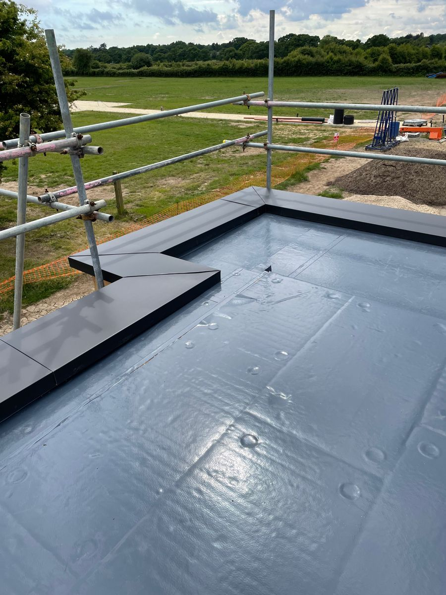

Профессиональный ремонт крыши частных домов
Капитальный и текущий ремонт кровли любой сложности. Быстрое устранение протечек, замена поврежденных участков и восстановление герметичности по договору.
Вызвать мастера на осмотрКапитальный и текущий ремонт кровли любой сложности. Быстрое устранение протечек, замена поврежденных участков и восстановление герметичности по договору.
Вызвать мастера на осмотр
Поиск скрытых дефектов кровельного пирога. Герметизация стыков, замена изношенных уплотнителей, ремонт примыканий вокруг дымоходов и вентиляционных шахт.
Демонтаж поврежденных листов и укладка новой износостойкой металлочерепицы Grand Line или элементов гибкой кровли Технониколь с точным подбором цвета.
Усиление подгнивших элементов несущей стропильной системы, восстановление геометрии скатов, полная замена изношенной гидроизоляционной мембраны.
Используем профессиональные битумные мастики, ленты и гидроизоляционные барьеры Технониколь. Полная блокировка влаги в самых уязвимых узлах и ендовах.
При замене участков крыши монтируем сертифицированную сталь Grand Line толщиной 0.5 мм. Забудьте о ржавчине и коррозии на долгие десятилетия.
Стоимость ремонта оценивается экспертом на объекте и жестко фиксируется в смете. Вы платите только за реальное решение проблемы без накруток.